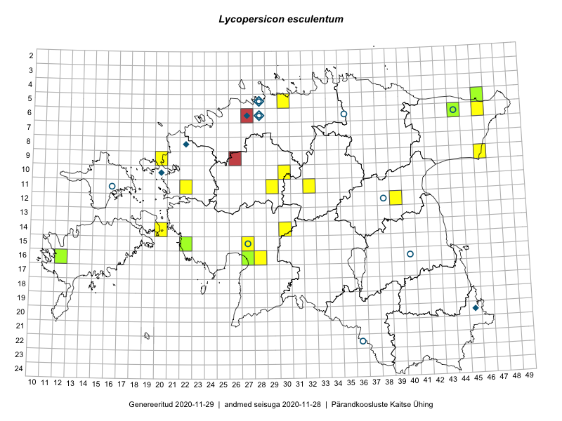

Lycopersicon esculentum
Uuendatud: 2016-12-08
Kaardile koondatud taksonid: Lycopersicon esculentum Mill., nom. cons.; Lycopersicum esculentum Mill.

Kaart põhineb 5 kirjel, neist vaatlusi 4 ja eksemplare 1. Taksonit on leitud 5 ruudust.
| Ruut | Vaatleja(d) | Vaatlusaeg | Kirje tüüp | Viide andmebaasikirjele |
|---|---|---|---|---|
| 12-39 | Peedu Saar, Eerik Leibak | 2015-08-16 | punkt | vaata PlutoFis |
| 16-27 | Indrek Tammekänd | 2016-08-27 | punkt | vaata PlutoFis |
| 10-30 | Indrek Tammekänd, Üllar Tammekänd, Janno Tammekänd, Andreas Tammekänd, Tene Johanson | 2016-08-20 | punkt | vaata PlutoFis |
| 14-30 | Hannes Pehlak, Tõnu Ploompuu, Marko Veinbergs | 2016-07-21 | ruut/ala | vaata PlutoFis |
| 06-44 | Peedu Saar, Liina Oja | 2015-07-21 | eksemplar | vaata PlutoFis |